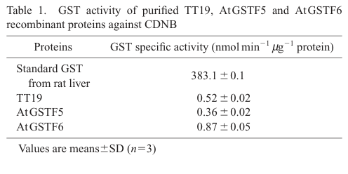

GSTF6 (At1g02930; also called ERD11 or GST1) is a soluble phi-class glutathione S-transferase of Arabidopsis thaliana with a thioredoxin-like N-terminal glutathione-binding domain and an all-helical C-terminal domain. It catalyses conjugation of reduced glutathione to electrophilic substrates, but its activity on the model substrate CDNB is low and its physiological substrates are not firmly established. It has no targeting peptide and is a cytosolic protein. The gene is among the most broadly stress-inducible GSTs in Arabidopsis, responding to dehydration, salicylic acid, ethylene, jasmonate, auxin, oxidative stress, heavy metals, herbicide safeners and pathogens. GSTF6 has been proposed to conjugate glutathione to the activated indole-3-acetonitrile intermediate in camalexin biosynthesis, producing GS-IAN. Supporting this, gstf6 knockouts make modestly less camalexin, overexpression lines make modestly more, and GSTF6 increases GS-IAN formation in yeast. However, higher-order phi GST mutants show no camalexin defect, many other Arabidopsis GSTs support GS-IAN formation, and the activated intermediate can react with glutathione without an enzyme. GSTF6 is therefore best viewed as one of several redundant contributors to this step rather than a dedicated pathway enzyme. It is not part of the P450 camalexin metabolon (the tau-class GSTU4 is recruited there instead) and it does not act as an anthocyanin carrier.
| GO Term | Evidence | Action | Reason |
|---|---|---|---|
|
GO:0000325
plant-type vacuole
|
HDA
PMID:15539469 The vegetative vacuole proteome of Arabidopsis thaliana reve... |
MARK AS OVER ANNOTATED |
Summary: GSTF6 was detected by mass spectrometry in a purified vegetative vacuole proteome.
Reason: GSTF6 is a soluble GST with no targeting peptide and is cytosolic. A single detection in an organelle proteome, without targeted validation, most likely reflects carry-over of an abundant stress-induced cytosolic protein. There is no evidence that GSTF6 acts in the vacuole. The deep research specifically warns against transferring the vacuolar-transport role of TT19/GSTF12 to GSTF6.
Supporting Evidence:
PMID:15539469
Total purified vacuolar proteins were then subjected either to multidimensional liquid chromatography/tandem mass spectrometry
PMID:21712415
The fourth enzyme, GSTF6, lacks predicted signaling peptides and is therefore most likely cytosolic.
file:ARATH/GSTF6/GSTF6-deep-research-falcon.md
GSTF6 should therefore not be annotated as the demonstrated TT19-like vacuolar anthocyanin carrier
|
|
GO:0004364
glutathione transferase activity
|
IBA
GO_REF:0000033 |
ACCEPT |
Summary: Phylogenetic inference of glutathione transferase activity across the GST family, including the Arabidopsis phi-class members.
Reason: GSTF6 is a phi-class GST with conserved glutathione-binding residues. Recombinant GSTF6 is soluble and catalyses glutathione conjugation. This is the core molecular function of the protein. The IBA node placement is consistent with the experimental data.
Supporting Evidence:
PMID:12090627
All GSTs except AtGSTF10 formed soluble proteins which catalysed a specific range of glutathione conjugation or glutathione peroxidase activities.
PMID:21239642
Arabidopsis GSTF6 expressed in yeast cells catalyzed GSH(IAN) formation.
|
|
GO:0004364
glutathione transferase activity
|
IEA
GO_REF:0000120 |
ACCEPT |
Summary: Electronic mapping from EC 2.5.1.18 / RHEA:16437 to glutathione transferase activity.
Reason: The mapping is correct. GSTF6 catalyses glutathione conjugation, as shown by experiment. This is the core molecular function.
Supporting Evidence:
PMID:12090627
All GSTs except AtGSTF10 formed soluble proteins which catalysed a specific range of glutathione conjugation or glutathione peroxidase activities.
|
|
GO:0005507
copper ion binding
|
HDA
PMID:16526091 Proteomic survey of copper-binding proteins in Arabidopsis r... |
MARK AS OVER ANNOTATED |
Summary: GSTF6 was retained on a copper-immobilized metal affinity chromatography (Cu-IMAC) column in a root proteomic survey.
Reason: Retention on an IMAC resin shows that the protein has surface residues (typically His clusters) that can coordinate an immobilized metal. It does not show that the protein binds copper as part of its biological function. GSTF6 is not a known metalloprotein, and no copper site or copper-dependent activity has been described. The annotation records an assay property rather than a molecular function.
Supporting Evidence:
PMID:16526091
we have systematically screened for copper-interacting proteins in Arabidopsis roots via copper-immobilized metal affinity chromatography (Cu-IMAC)
|
|
GO:0005576
extracellular region
|
HDA
PMID:28887381 Global Analysis of Membrane-associated Protein Oligomerizati... |
MARK AS OVER ANNOTATED |
Summary: GSTF6 was detected in a membrane-fraction protein correlation profiling dataset.
Reason: GSTF6 has no signal peptide and is cytosolic. The source study profiled membrane-associated protein complexes after cell fractionation, which is not a suitable assay for assigning an extracellular location. Extracellular action of GSTF6 has not been established.
Supporting Evidence:
PMID:28887381
Over 150 proteins had a complicated localization pattern, and were clearly partitioned between cytosolic and membrane-associated pools.
PMID:21712415
The fourth enzyme, GSTF6, lacks predicted signaling peptides and is therefore most likely cytosolic.
|
|
GO:0005737
cytoplasm
|
IBA
GO_REF:0000033 |
ACCEPT |
Summary: Phylogenetic inference that phi-class GSTs act in the cytoplasm.
Reason: GSTF6 is a soluble GST without targeting signals. Cytoplasm is correct, and cytosol is the more specific location.
Supporting Evidence:
PMID:21712415
The fourth enzyme, GSTF6, lacks predicted signaling peptides and is therefore most likely cytosolic.
|
|
GO:0005737
cytoplasm
|
NAS
PMID:12090627 Probing the diversity of the Arabidopsis glutathione S-trans... |
ACCEPT |
Summary: Author statement in the Arabidopsis GST family survey that phi GSTs are cytoplasmic.
Reason: This agrees with the absence of targeting peptides and the soluble nature of the recombinant protein. It is consistent with the IBA and the cytosol annotations.
Supporting Evidence:
PMID:12090627
All GSTs except AtGSTF10 formed soluble proteins
PMID:21712415
The fourth enzyme, GSTF6, lacks predicted signaling peptides and is therefore most likely cytosolic.
|
|
GO:0005739
mitochondrion
|
HDA
PMID:12492832 The impact of oxidative stress on Arabidopsis mitochondria. |
MARK AS OVER ANNOTATED |
Summary: GSTF6 was detected in purified mitochondria from oxidatively stressed Arabidopsis cell cultures.
Reason: The authors themselves note that several stress-induced proteins in their fraction are generally considered extramitochondrial. GSTF6 has no mitochondrial targeting peptide and is strongly induced by H2O2. Its detection most likely reflects association or contamination of an abundant cytosolic protein, not a mitochondrial location.
Supporting Evidence:
PMID:12492832
Several others are generally considered to be extramitochondrial but are clearly present in a highly purified mitochondrial fraction used in this study and are known to play roles in stress response.
|
|
GO:0005739
mitochondrion
|
HDA
PMID:14671022 Experimental analysis of the Arabidopsis mitochondrial prote... |
MARK AS OVER ANNOTATED |
Summary: GSTF6 was detected in a large LC-MS/MS mitochondrial proteome.
Reason: GSTF6 lacks a mitochondrial presequence. Only about half of the proteins in this experimental set are predicted to be mitochondrial, so the dataset includes non-mitochondrial proteins. No targeted study places GSTF6 in mitochondria.
Supporting Evidence:
PMID:14671022
Only approximately half of the experimental set is predicted to be mitochondrial by targeting prediction programs
|
|
GO:0005829
cytosol
|
HDA
PMID:25293756 A proteomic strategy for global analysis of plant protein co... |
ACCEPT |
Summary: GSTF6 was identified in the crude cytosolic fraction of Arabidopsis leaves by size exclusion chromatography and LC-MS profiling.
Reason: This agrees with GSTF6 having no targeting peptide and with its soluble behaviour. The cytosol is the expected site of action, including for any contribution to the cytosolic glutathione-conjugate steps of camalexin biosynthesis.
Supporting Evidence:
PMID:25293756
Applying this approach to the crude cytosolic fraction of Arabidopsis thaliana leaves using size exclusion chromatography, we identified hundreds of cytosolic proteins
PMID:21712415
The fourth enzyme, GSTF6, lacks predicted signaling peptides and is therefore most likely cytosolic.
|
|
GO:0005829
cytosol
|
IEA
GO_REF:0000044 |
ACCEPT |
Summary: UniProt subcellular location (Cytoplasm, cytosol) mapped to GO.
Reason: Consistent with the HDA cytosol annotation and with GSTF6 having no targeting peptide.
Supporting Evidence:
PMID:21712415
The fourth enzyme, GSTF6, lacks predicted signaling peptides and is therefore most likely cytosolic.
|
|
GO:0006749
glutathione metabolic process
|
IBA
GO_REF:0000033 |
ACCEPT |
Summary: Phylogenetic inference that GST family members take part in glutathione metabolism.
Reason: GSTF6 uses reduced glutathione as a co-substrate to form S-glutathione conjugates. For camalexin, the conjugate (GS-IAN) is processed further by GGP1/GGP3, so conjugate formation is a direct step of glutathione metabolism. The term is broad, but it is the right level for a GST whose specific physiological substrates are uncertain.
Supporting Evidence:
PMID:21239642
These results suggest that GSH is the Cys derivative used during camalexin biosynthesis
PMID:12090627
All GSTs except AtGSTF10 formed soluble proteins which catalysed a specific range of glutathione conjugation or glutathione peroxidase activities.
|
|
GO:0006979
response to oxidative stress
|
IEP
PMID:9501110 Induction of Arabidopsis tryptophan pathway enzymes and cama... |
KEEP AS NON CORE |
Summary: Expression-based annotation. A stress-inducible GST transcript was induced by the oxidative-stress-inducing herbicide acifluorfen, alongside the Trp pathway and camalexin.
Reason: GSTF6 is reliably induced by oxidative stress (H2O2, acifluorfen). IEP shows that its expression responds to the stress, not that GSTF6 carries out the response. Combined RNAi of GSTF6/7/9/10 gave only subtle changes. The annotation is reasonable as a non-core expression response.
Supporting Evidence:
PMID:9501110
The mRNAs for two stress-inducible enzymes unrelated to amino acid biosynthesis and accumulation of the indolic phytoalexin camalexin were also induced by amino acid starvation.
PMID:9501110
treatments with the oxidative stress-inducing herbicide acifluorfen and the abiotic elicitor alpha-amino butyric acid induced responses similar to those induced by the amino acid starvation treatments
|
|
GO:0009407
toxin catabolic process
|
IEA
GO_REF:0000117 |
KEEP AS NON CORE |
Summary: ARBA machine-learning inference that GSTs act in toxin catabolism.
Reason: Glutathione conjugation of xenobiotic electrophiles, including herbicides, is a well-established general role of plant GSTs. GSTF6 is induced by herbicides and safeners and has conjugating activity. However, no specific toxin has been shown to be detoxified by GSTF6 in planta, and its activity on the model substrate CDNB is low. This is a plausible family-level role, not a demonstrated core function.
Supporting Evidence:
PMID:12090627
Glutathione S-transferases (GSTs) appear to be ubiquitous in plants and have defined roles in herbicide detoxification.
|
|
GO:0009407
toxin catabolic process
|
TAS
PMID:12090627 Probing the diversity of the Arabidopsis glutathione S-trans... |
KEEP AS NON CORE |
Summary: Author statement from the Arabidopsis GST family survey linking GSTs to herbicide detoxification.
Reason: The statement is about the GST family in general, and GSTF6 was shown to be herbicide-inducible and catalytically active. A GSTF6-specific toxin substrate has not been identified, so this is kept as non-core.
Supporting Evidence:
PMID:12090627
Glutathione S-transferases (GSTs) appear to be ubiquitous in plants and have defined roles in herbicide detoxification.
PMID:12090627
AtGSTF6 was upregulated by all treatments
|
|
GO:0009414
response to water deprivation
|
IEP
PMID:8253194 Characterization of two cDNAs (ERD11 and ERD13) for dehydrat... |
KEEP AS NON CORE |
Summary: ERD11 (GSTF6) was isolated as a dehydration-inducible cDNA.
Reason: The paper directly shows dehydration-induced expression. It does not show a role for GSTF6 in drought tolerance, so this is a non-core expression response.
Supporting Evidence:
PMID:8253194
The expression of the genes for ERD11 and ERD13 was induced by dehydration
|
|
GO:0009505
plant-type cell wall
|
HDA
PMID:16287169 Arabidopsis cell wall proteome defined using multidimensiona... |
MARK AS OVER ANNOTATED |
Summary: GSTF6 was detected in a MudPIT proteome of purified cell walls from suspension cells.
Reason: GSTF6 lacks a signal peptide, and the study itself relied on signal peptide prediction to select genuine extracellular proteins. A soluble cytosolic GST found in a wall preparation is best treated as a contaminant.
Supporting Evidence:
PMID:16287169
Using bioinformatics for the prediction of signal peptides for targeting to the secretory pathway and for the absence of ER retention signal, 89 proteins were selected as potential extracellular proteins.
|
|
GO:0009506
plasmodesma
|
HDA
PMID:21533090 Arabidopsis plasmodesmal proteome. |
MARK AS OVER ANNOTATED |
Summary: GSTF6 was detected in the plasmodesmal proteome of Arabidopsis suspension cells.
Reason: The authors estimate that about a third of the PD-proteome consists of cytoplasmic contaminants. GSTF6 is an abundant, stress-induced cytosolic GST that has not been validated at plasmodesmata.
Supporting Evidence:
PMID:21533090
still has a significant number (35%) of putative cytoplasmic contaminants, probably reflecting the sensitivity of the proteomic detection system
|
|
GO:0009507
chloroplast
|
ISM
GO_REF:0000122 |
REMOVE |
Summary: AtSubP sequence-based prediction of chloroplast localization.
Reason: GSTF6 has no chloroplast transit peptide. It is described as lacking targeting peptides and is found in the cytosolic fraction. This computational prediction is contradicted by sequence and experimental localization data.
Supporting Evidence:
PMID:21712415
The fourth enzyme, GSTF6, lacks predicted signaling peptides and is therefore most likely cytosolic.
|
|
GO:0010494
cytoplasmic stress granule
|
IDA
PMID:30664249 Protein and metabolite composition of Arabidopsis stress gra... |
KEEP AS NON CORE |
Summary: GSTF6 was identified among proteins co-purifying with Rbp47b-GFP-marked stress granules after heat stress.
Reason: Stress granules form in the cytosol, so this is compatible with the cytosolic location of GSTF6. The authors note that many non-canonical SG proteins are enzymes that may be stored in SGs during stress. This is a plausible condition-specific location, but it is not part of GSTF6's core function.
Supporting Evidence:
PMID:30664249
Intriguingly, the remaining proteins were enriched in key enzymes and regulators
|
|
GO:0043295
glutathione binding
|
IBA
GO_REF:0000033 |
ACCEPT |
Summary: Phylogenetic inference of glutathione binding in the phi GST clade. GSTF6 (AT1G02930) is among the donors because of its own experimental annotation.
Reason: GSTF6 binds glutathione through its N-terminal G-site, and this binding is part of its glutathione transferase activity. The protein was experimentally retained on glutathione affinity media. The target appearing among the IBA donors reflects that experimental evidence, not circularity.
Supporting Evidence:
PMID:15159623
glutathione-affinity chromatography
|
|
GO:0043295
glutathione binding
|
IDA
PMID:15159623 Proteomic analysis of glutathione S -transferases of Arabido... |
ACCEPT |
Summary: GSTF6 was purified from Arabidopsis cell culture by glutathione-affinity chromatography.
Reason: Retention on immobilized glutathione is direct evidence of glutathione binding. This fits the G-site of a phi GST and underlies its transferase activity.
Supporting Evidence:
PMID:15159623
we identified 20 GSTs at the protein level in Arabidopsis cell culture with a combination of GST antibody detection, LC-MS/MS analysis of 23-30 kDa proteins and glutathione-affinity chromatography
|
|
GO:0046686
response to cadmium ion
|
IEP
PMID:17075075 Proteome changes in Arabidopsis thaliana roots upon exposure... |
KEEP AS NON CORE |
Summary: GSTs including GSTF6 changed in abundance in the Arabidopsis root proteome after Cd2+ exposure.
Reason: Cadmium induction of GSTF6 is also reported independently (UniProt INDUCTION). This is an expression response to a stress, not a demonstrated role in cadmium tolerance.
Supporting Evidence:
PMID:17075075
Most of the identified proteins belong to four different classes
|
|
GO:0050897
cobalt ion binding
|
HDA
PMID:20018591 Divalent metal ions in plant mitochondria and their role in ... |
MARK AS OVER ANNOTATED |
Summary: GSTF6 was retained on Co2+-charged IMAC resin in a survey of metal-interacting mitochondrial proteins.
Reason: As for copper, IMAC retention shows surface residues that coordinate an immobilized metal, not a biological cobalt-binding function. GSTF6 is also not a mitochondrial protein. No cobalt-dependent function of GSTF6 is known.
Supporting Evidence:
PMID:20018591
Immobilized metal affinity chromatography charged with Cu(2+), Zn(2+), and Co(2+) was used to identify over 100 mitochondrial proteins with metal-binding properties.
|
|
GO:2001147
camalexin binding
|
IDA
PMID:21631432 The Arabidopsis phi class glutathione transferase AtGSTF2: b... |
UNDECIDED |
Summary: The source paper screened Arabidopsis phi GSTs for natural-product ligands. The abstract attributes selective camalexin binding to GSTF2.
Reason: The cached abstract names camalexin binding for GSTF2, and heterocycle binding for GSTF2 and GSTF3. GSTF6 is not mentioned, and the full text could not be accessed. The curator may have seen GSTF6 data in the full text, so the annotation is not removed. One complication is that "AtGSTF3" is a historical synonym of GSTF6 (At1g02930), while current nomenclature uses GSTF3 for At2g02930. The attribution therefore needs checking against the full text before this can be accepted or rejected.
Supporting Evidence:
PMID:21631432
GSTF2 also selectively bound the indole-derived phytoalexin camalexin, as well as the flavonol quercetin-3-O-rhamnoside
file:ARATH/GSTF6/GSTF6-deep-research-falcon.md
is an ambiguous historical alias
|
|
GO:2001227
quercitrin binding
|
IDA
PMID:21631432 The Arabidopsis phi class glutathione transferase AtGSTF2: b... |
UNDECIDED |
Summary: Same source as the camalexin binding annotation. The abstract attributes quercetin-3-O-rhamnoside binding to GSTF2.
Reason: The abstract does not mention GSTF6, the full text is not accessible, and the GSTF3/GSTF6 alias ambiguity applies here as well. The annotation can be neither verified nor refuted.
Supporting Evidence:
PMID:21631432
GSTF2 also selectively bound the indole-derived phytoalexin camalexin, as well as the flavonol quercetin-3-O-rhamnoside
|
Q: Should GSTF6 be annotated to camalexin biosynthetic process (GO:0010120)? Su et al. 2011 show modest knockout and overexpression effects and enhanced GS-IAN formation in yeast. Against this, higher-order gstf2 gstf3 gstf6 (gstf7) mutants show no camalexin defect, most Arabidopsis GSTs support GS-IAN formation, and the indole cyanohydrin intermediate reacts spontaneously with glutathione. Is the catalytic contribution of GSTF6 large enough in planta to count as participation?
Q: Were GSTF6 (At1g02930) data actually reported in Dixon et al. 2011 for camalexin and quercitrin binding, or do these annotations come from the historical AtGSTF3 alias of GSTF6 being confused with the current GSTF3 (At2g02930)?
Q: What is the physiological electrophile conjugated by GSTF6 under the many stresses that induce it?
Experiment: Steady-state kinetics of purified GSTF6 against chemically generated indole cyanohydrin / dehydro-IAN, with the uncatalysed rate measured in parallel, to quantify how much GSTF6 accelerates GS-IAN formation.
Experiment: Camalexin and GS-IAN profiling in higher-order phi and tau GST mutants (e.g. gstf6 gstf7 combined with other camalexin-coexpressed GSTs) after Botrytis infection rather than AgNO3, to test redundancy under pathogen-relevant conditions.
The research report should be a detailed narrative explaining the function, biological processes, and localization of the gene product. Citations should be given for all claims.
You should prioritize authoritative reviews and primary scientific literature when conducting research. You can supplement
this with annotations you find in gene/protein databases, but these can be outdated or inaccurate.
We are specifically interested in the primary function of the gene - for enzymes, what reaction is catalyzed, and what is the substrate specificity? For transporters, what is the substrate? For structural proteins or adapters, what is the broader structural role? For signaling molecules, what is the role in the pathway.
We are interested in where in or outside the cell the gene product carries out its function.
We are also interested in the signaling or biochemical pathways in which the gene functions. We are less interested in broad pleiotropic effects, except where these elucidate the precise role.
Include evidence where possible. We are interested in both experimental evidence as well as inference from structure, evolution, or bioinformatic analysis. Precise studies should be prioritized over high-throughput, where available.
GSTF6 is the Arabidopsis thaliana gene At1g02930, encoding the phi-class glutathione transferase AtGSTF6. This identification is anchored experimentally: the gstf6-1 insertion disrupts At1g02930, eliminates detectable GSTF6 transcript, and was examined alongside recombinant protein from an AtGSTF6 cDNA. ERD11 and GST1 are documented alternative names. “GSTF3” is an ambiguous historical alias: although one review lists it for At1g02930, current Arabidopsis GST nomenclature also assigns GSTF3 to the different locus At2g02930. The report therefore uses At1g02930/P42760, not an alias alone, to identify its subject. Likewise, TT19/GSTF12 is At5g17220, not GSTF6; findings for a GSTF6 in another plant species cannot be transferred to this protein. (wangwattana2008characterizationofpap1upregulated pages 2-4, dixon2010glutathionetransferases pages 7-9, sylvestregonon2019functionalstructuraland pages 14-16, dixon2010glutathionetransferases pages 5-7)
The supplied UniProt accession P42760 and its GST N-terminal and C-terminal domain annotations are consistent with this locus-verified phi-family assignment. Canonical soluble plant GSTs have an N-terminal thioredoxin-like glutathione-binding region and a C-terminal predominantly helical region contributing to binding other molecules. Phi GSTs belong to the predominantly serine-type GST group, but family architecture alone cannot identify this particular protein’s physiological substrate. (wangwattana2008characterizationofpap1upregulated pages 2-4, sylvestregonon2019functionalstructuraland pages 2-3, sylvestregonon2019functionalstructuraland pages 1-2)
Established reaction: purified recombinant AtGSTF6 catalyzes conjugation of reduced glutathione (GSH) with the artificial electrophile 1-chloro-2,4-dinitrobenzene (CDNB), yielding the dinitrophenyl–glutathione conjugate. In the published assay, its specific activity was 0.87 ± 0.05 nmol min⁻¹ mg⁻¹ protein (n = 3), compared with 0.52 ± 0.02 for TT19 and 383.1 ± 0.1 for the rat-liver GST reference. This is direct evidence for glutathione-transferase activity, not evidence that CDNB is an endogenous substrate or that GSTF6 has unusually high activity on physiological metabolites. The study does not establish a GSTF6-specific Km, kcat, or ranked physiological substrate panel. Wangwattana et al., March 2008, Plant Biotechnology, DOI: 10.5511/plantbiotechnology.25.191. (wangwattana2008characterizationofpap1upregulated pages 2-4, wangwattana2008characterizationofpap1upregulated media 1f06e87f)
Leading proposed endogenous role: glutathione-dependent camalexin formation. Camalexin is a tryptophan-derived defensive metabolite. In the proposed pathway, CYP79B2/B3 convert tryptophan toward indole-3-acetaldoxime; CYP71A12/A13 generate indole-3-acetonitrile (IAN) and participate in its further activation; a GSH-derived intermediate, conventionally called GS-IAN, is subsequently processed by γ-glutamyl peptidases GGP1/GGP3 toward cysteine-containing intermediates and ultimately camalexin. GS-IAN has been identified against a chemically synthesized standard in Arabidopsis GGP-deficient plants, providing strong evidence for the GSH-containing pathway intermediate, but not identifying GSTF6 as its unique forming enzyme. Geu-Flores et al., June 2011, The Plant Cell, DOI: 10.1105/tpc.111.083998; Mucha et al., September 2019, The Plant Cell, DOI: 10.1105/tpc.19.00403. (geuflores2011cytosolicγglutamylpeptidases pages 7-8, mucha2019theformationof pages 2-3)
GSTF6 is implicated genetically: its abundance rose with GSTF2 and GSTF7 during experimentally induced camalexin production; GSTF6 overexpression increased camalexin, whereas a gstf6 single mutant had a small but significant decrease—described in a subsequent primary-paper discussion as approximately 20%. These observations make a contributory role credible, not a requirement for all camalexin formation. Su et al., 2011, The Plant Cell, DOI: 10.1105/tpc.110.079145, as evaluated by Czerniawski and Bednarek, November 2018, Frontiers in Plant Science, DOI: 10.3389/fpls.2018.01639. (czerniawski2018glutathionestransferasesin pages 6-7, pislewskabednarek2018glutathionetransferaseu13 pages 4-6)
Crucial substrate qualification: descriptions of GSTF6 simply catalyzing “IAN + GSH → GS-IAN” should be read as a pathway proposal, not a demonstrated GSTF6-specific elementary reaction. CYP71A12/A13 can further activate IAN to reactive derivatives—including α-hydroxy-IAN/dehydro-IAN or a proposed indole cyanohydrin—that can add GSH spontaneously. The exact GSTF6 physiological electrophile, its substrate preference over those candidates, and the extent to which enzyme catalysis accelerates their reaction in planta remain unresolved. Czerniawski and Bednarek, 2018; Micic et al., September 2024, Philosophical Transactions of the Royal Society B, DOI: 10.1098/rstb.2023.0365. (czerniawski2018glutathionestransferasesin pages 6-7, micic2024overlookedandmisunderstood pages 8-9)
Several results constrain a dedicated-enzyme annotation. After silver-nitrate induction, camalexin did not differ significantly from wild type in a gstf2 gstf3 gstf6 triple knockout or a four-gene knockdown additionally targeting gstf7. Adding GSTF6 to a camalexin pathway reconstructed in Nicotiana benthamiana likewise did not increase its output. In a 2019 engineered-yeast screen, 41 of 54 tested Arabidopsis GSTs supported GS-IAN formation in the presence of CYP71A13. Such findings point to enzyme redundancy, spontaneous chemistry, host-dependent effects, or spatial organization, rather than unique GSTF6 substrate specificity. Mucha et al., 2019; Micic et al., 2024. (mucha2019theformationof pages 2-3, mucha2019theformationof pages 7-8, micic2024overlookedandmisunderstood pages 8-9)
The distinction from anthocyanin transport is especially well tested. Although GSTF6 transcript abundance was reported 17.9-fold higher in PAP1-overexpressing plants, gstf6-1 showed no significant change in anthocyanin abundance or pattern under the tested high-sucrose conditions; loss of TT19/GSTF12, in contrast, reduced anthocyanins 96%. Direct comparison found a cyanidin-3-O-glucoside binding constant 8.4-fold higher for TT19 than GSTF6, and detected no GSH-conjugated cyanidin or cyanidin-3-O-glucoside in that assay. GSTF6 should therefore not be annotated as the demonstrated TT19-like vacuolar anthocyanin carrier. Wangwattana et al., 2008; Sun et al., March 2012, Molecular Plant, DOI: 10.1093/mp/ssr110. (wangwattana2008characterizationofpap1upregulated pages 2-4, sun2012arabidopsistt19functions pages 6-9, wangwattana2008characterizationofpap1upregulated pages 1-2)
The evidence and its limitations are summarized below; the published CDNB activity and phi-family assignment were also checked against the study’s cropped assay table and phylogeny. (wangwattana2008characterizationofpap1upregulated media 1f06e87f, wangwattana2008characterizationofpap1upregulated media ba572d39)
| Claim/function | Evidence and quantitative findings | Inference/limitations | Primary reference (year; DOI) |
|---|---|---|---|
| Identity and enzyme class | Recombinant and knockout studies identify the target as Arabidopsis thaliana AtGSTF6, locus At1g02930; phylogenetic analysis places it in the plant phi GST class. The canonical family architecture comprises an N-terminal thioredoxin-like GSH-binding domain and a C-terminal all-helical hydrophobic-substrate-binding domain. (wangwattana2008characterizationofpap1upregulated pages 2-4, sylvestregonon2019functionalstructuraland pages 1-2) | Assignment is secure at the locus level. Historical nomenclature is hazardous: GSTF3 at At2g02930 is a separate locus, so results for that protein must not be assigned to P42760. (dixon2010glutathionetransferases pages 7-9, dixon2010glutathionetransferases pages 5-7) | Wangwattana et al. (2008); 10.5511/plantbiotechnology.25.191 |
| Demonstrated catalytic activity with a model substrate | Purified AtGSTF6 catalyzed conjugation of GSH with 1-chloro-2,4-dinitrobenzene (CDNB) to form DNP-GS, with reported specific activity 0.87 ± 0.05 nmol min⁻¹ mg⁻¹ protein (n=3), versus 0.52 ± 0.02 for TT19 under the same conditions. (wangwattana2008characterizationofpap1upregulated pages 2-4, wangwattana2008characterizationofpap1upregulated media 1f06e87f) | Direct evidence that the protein is a functional GST, but CDNB is an artificial broad-spectrum substrate. No Kₘ, kcat, catalytic efficiency, or validated endogenous substrate was reported; activity was extremely weak relative to rat-liver GST (383.1 ± 0.1 in the same assay). | Wangwattana et al. (2008); 10.5511/plantbiotechnology.25.191 |
| Contribution to camalexin biosynthesis | GSTF6 accumulated with GSTF2 and GSTF7 during MAPKK9-driven camalexin production. GSTF6 overexpression in that background significantly increased camalexin, whereas a single gstf6 knockout caused only a slight significant reduction—reported in a later account as approximately 20%. (czerniawski2018glutathionestransferasesin pages 6-7, pislewskabednarek2018glutathionetransferaseu13 pages 4-6) | Supports a contributory, redundant role rather than an indispensable dedicated enzyme. The often-stated reaction “IAN + GSH → GS-IAN” is oversimplified: CYP71A12/A13 likely activate IAN to reactive α-hydroxy-IAN/dehydro-IAN or indole cyanohydrin, which can conjugate spontaneously with GSH. Direct GSTF6 kinetics for the physiological intermediate have not been established. (czerniawski2018glutathionestransferasesin pages 6-7, micic2024overlookedandmisunderstood pages 8-9) | Su et al. (2011); 10.1105/tpc.110.079145 |
| Counterevidence and redundancy in camalexin formation | Camalexin was not significantly altered in an gstf2 gstf3 gstf6 triple knockout or an gstf2 gstf3 gstf6 gstf7 knockdown after AgNO₃ induction. Adding GSTF6 to a reconstituted Nicotiana benthamiana pathway likewise did not increase camalexin. A 2019 screen found 41 of 54 Arabidopsis GSTs capable of supporting GS-IAN formation with CYP71A13 in engineered yeast. (mucha2019theformationof pages 2-3, czerniawski2018glutathionestransferasesin pages 6-7, mucha2019theformationof pages 7-8) | Strong evidence against strict GSTF6 substrate exclusivity. Results are compatible with broad GST redundancy, spontaneous GSH addition, host GST substitution, and spatial recruitment rather than unique catalytic specificity. | Mucha et al. (2019); 10.1105/tpc.19.00403; Møldrup et al. (2013); 10.1016/j.jbiotec.2013.06.013 |
| Not required for anthocyanin accumulation | Under high-sucrose conditions, loss of TT19/GSTF12 reduced anthocyanin accumulation by 96%, whereas the transcript-null gstf6-1 mutant showed no significant change in total anthocyanin level, anthocyanin pattern, or broader flavonoid profile. (wangwattana2008characterizationofpap1upregulated pages 2-4, wangwattana2008characterizationofpap1upregulated pages 4-6) | Demonstrates that GSTF6 does not substitute for TT19 in the tested anthocyanin-storage pathway. PAP1-induced GSTF6 expression therefore does not by itself establish an anthocyanin transport function. | Wangwattana et al. (2008); 10.5511/plantbiotechnology.25.191 |
| Weak anthocyanin binding; no detected pigment glutathionylation | TT19 bound cyanidin-3-O-glucoside (C3G) with a binding constant 8.4-fold higher than GSTF6 and increased cyanidin solubility far more strongly. Neither protein produced detectable GSH-conjugated cyanidin or C3G in the assay. (sun2012arabidopsistt19functions pages 6-9) | GSTF6 can serve as a comparative low-affinity control, but these data do not establish a physiologically relevant pigment-ligandin function. They also distinguish noncovalent ligand binding from GST catalysis. | Sun et al. (2012); 10.1093/mp/ssr110 |
| Probable cellular site of action | GSTF6 lacks a reported targeting peptide and belongs to a predominantly soluble GST class; the relevant GSH-conjugate-processing enzymes GGP1/GGP3 were experimentally localized to the cytosol, while camalexin-pathway P450s reside in the ER with catalytic domains facing the cytosol. (dixon2010glutathionetransferases pages 5-7, geuflores2011cytosolicγglutamylpeptidases pages 7-8, mucha2019theformationof pages 2-3) | A cytosolic or cytosolic face-of-ER site is mechanistically plausible, but GSTF6-specific GFP localization, membrane fractionation, or organelle-targeting evidence was not identified. Localization measured for TT19, GSTU4, GSTU2, GGP1/GGP3, or P450s must not be transferred to GSTF6. (mucha2019theformationof pages 6-7, dixon2010glutathionetransferases pages 5-7) | Geu-Flores et al. (2011); 10.1105/tpc.111.083998; Mucha et al. (2019); 10.1105/tpc.19.00403 |
| Stress and immune-response association | GSTF6 is dehydration/stress inducible, and combined RNAi against GSTF6/7/9/10 caused subtle metabolic changes consistent with reduced oxidative-stress tolerance but no overt phenotype. Independent expression mining reported approximately 10.38-fold GSTF6 induction across salt/osmotic/drought-stress datasets. (dixon2010glutathionetransferases pages 10-11, seok2020investigationofa pages 8-11) | These are expression and multi-gene perturbation data, not proof that GSTF6 directly detoxifies ROS or a particular electrophile. Individual-gene causality and endogenous stress substrate remain unresolved. | Sappl et al. (2009), as summarized by Dixon & Edwards (2010); 10.1199/tab.0131; Seok et al. (2020); 10.3390/ijms21051595 |
| 2024 spatial host–microbiome evidence | Spatial metatranscriptomics of outdoor-grown Arabidopsis leaves identified GSTF6/AT1G02930 among immune-related, general non-self-response genes associated with microbial infection at micrometer-scale tissue resolution. (saarenpaa2024spatialmetatranscriptomicsresolves pages 9-10, saarenpaa2024spatialmetatranscriptomicsresolves pages 8-9) | This is a spatial RNA association after prolonged natural host–microbiota interaction—not protein localization, enzyme activity, direct microbial binding, or evidence of causality. The available passage does not justify a GSTF6-specific causal relationship with Pseudomonas. | Saarenpää et al. (2024; online 2023); 10.1038/s41587-023-01979-2 |
| Current evidence-weighted conclusion | A 2024 authoritative review concludes that GSTF6 is associated with camalexin production, but its knockout effect is slight and heterologous complementation is negative; endogenous GS-conjugates, broad GST promiscuity, spontaneous GSH reactions, and redundancy complicate assignment. (micic2024overlookedandmisunderstood pages 8-9) | High confidence: phi-class GSH-transferase capable of CDNB conjugation. Moderate confidence: redundant contributor to stress-induced camalexin metabolism. Low confidence: exclusive GS-IAN-forming enzyme, anthocyanin carrier, or any precise GSTF6-specific subcellular compartment. | Micic et al. (2024); 10.1098/rstb.2023.0365 |
Table: Evidence-strength summary for Arabidopsis GSTF6 specifically anchored to At1g02930/P42760. It separates direct biochemical and genetic results from pathway inference, redundancy, and localization claims.
Where does GSTF6 act? A soluble cytosolic site, potentially near the cytosolic face of the endoplasmic reticulum (ER) during camalexin synthesis, is the most defensible inference, not an experimentally established GSTF6-specific localization. GST proteins commonly occur in the cytosol; GGP1/GGP3 fusion proteins have been localized there, while camalexin-pathway P450 enzymes occupy the ER and expose their catalytic machinery toward the cytosolic reaction space. No compelling GSTF6-specific fluorescence-localization or organelle-fractionation result was identified here. In particular, the reported cytosol/tonoplast localization of TT19 and physical association of GSTU4, another GST, with camalexin P450s do not demonstrate either location or interaction for GSTF6. Extracellular action is not established. Dixon and Edwards, January 2010, The Arabidopsis Book, DOI: 10.1199/tab.0131; Geu-Flores et al., 2011; Mucha et al., 2019. (dixon2010glutathionetransferases pages 5-7, geuflores2011cytosolicγglutamylpeptidases pages 7-8, mucha2019theformationof pages 2-3, mucha2019theformationof pages 6-7)
Signaling and stress: GSTF6 expression and abundance respond in contexts involving defense and environmental stress, but this does not make GSTF6 itself an established signaling receptor or kinase. Its association with camalexin connects it to inducible pathogen-defense metabolism downstream of stress-responsive MAPK activation. Combined suppression of GSTF6, GSTF7, GSTF9, and GSTF10 caused subtle stress-related metabolite changes without an overt phenotype; because four genes were reduced together, these data cannot assign an oxidative-stress substrate specifically to GSTF6. A separate transcriptomic analysis identified At1g02930 among stress-associated genes and reported an approximately 10.377-fold expression-change statistic in its stress-response analysis, but did not establish GSTF6-dependent salt tolerance. Dixon and Edwards, 2010; Seok et al., February 2020, International Journal of Molecular Sciences, DOI: 10.3390/ijms21051595. (dixon2010glutathionetransferases pages 10-11, seok2020investigationofa pages 8-11)
2024 interpretation and application. A recent expert review specifically warns that broad GST substrate promiscuity, rapid processing or spontaneous formation of GSH adducts, and overlapping GST activities can make a single knockout look nearly normal. Its assessment of GSTF6 emphasizes the mismatch between increased camalexin after overexpression, the small knockout effect, and the negative Nicotiana reconstruction result. Thus the practical use of At1g02930 today is as a locus-specific candidate in Arabidopsis defense-metabolite and stress-response experiments, not as a validated enzyme for a uniquely specified natural substrate or a deployed crop-engineering intervention. Micic et al., September 2024. (micic2024overlookedandmisunderstood pages 8-9)
In an independent 2024 application of spatial metatranscriptomics to outdoor-grown Arabidopsis leaves, GSTF6/AT1G02930 appeared among immune-related general non-self-response genes associated with microbial exposure. This is useful spatial host-RNA evidence for defense responsiveness, but neither a measurement of GSTF6 protein location nor proof that GSTF6 acts directly on a microbe or its metabolites. Saarenpää et al., Nature Biotechnology 42, 1384–1393 (2024), DOI: 10.1038/s41587-023-01979-2. (saarenpaa2024spatialmetatranscriptomicsresolves pages 9-10, saarenpaa2024spatialmetatranscriptomicsresolves pages 8-9)
Bottom-line annotation: AtGSTF6/P42760 is a phi-class, GSH-dependent transferase with experimentally demonstrated activity on CDNB and genetic, but non-exclusive, support for participation in camalexin-producing defense metabolism. Its precise endogenous substrate, substrate specificity, catalytic necessity in GS-IAN formation, and GSTF6-specific subcellular position remain unresolved. Assigning it TT19’s anthocyanin-transport function, a uniquely essential camalexin reaction, or another organism’s GSTF6 properties would overstate the evidence. (wangwattana2008characterizationofpap1upregulated pages 2-4, micic2024overlookedandmisunderstood pages 8-9, czerniawski2018glutathionestransferasesin pages 6-7, mucha2019theformationof pages 2-3, dixon2010glutathionetransferases pages 5-7)
References
(wangwattana2008characterizationofpap1upregulated pages 2-4): Bunyapa Wangwattana, Yoko Koyama, Yasutaka Nishiyama, Masahiko Kitayama, Mami Yamazaki, and Kazuki Saito. Characterization of pap1-upregulated glutathione s-transferase genes in arabidopsis thaliana. Plant Biotechnology, 25:191-196, Mar 2008. URL: https://doi.org/10.5511/plantbiotechnology.25.191, doi:10.5511/plantbiotechnology.25.191. This article has 39 citations and is from a peer-reviewed journal.
(dixon2010glutathionetransferases pages 7-9): David P. Dixon and Robert Edwards. Glutathione transferases. The Arabidopsis Book, 2010:e0131, Jan 2010. URL: https://doi.org/10.1199/tab.0131, doi:10.1199/tab.0131. This article has 355 citations and is from a peer-reviewed journal.
(sylvestregonon2019functionalstructuraland pages 14-16): Elodie Sylvestre-Gonon, Simon R. Law, Mathieu Schwartz, Kevin Robe, Olivier Keech, Claude Didierjean, Christian Dubos, Nicolas Rouhier, and Arnaud Hecker. Functional, structural and biochemical features of plant serinyl-glutathione transferases. Frontiers in Plant Science, May 2019. URL: https://doi.org/10.3389/fpls.2019.00608, doi:10.3389/fpls.2019.00608. This article has 126 citations.
(dixon2010glutathionetransferases pages 5-7): David P. Dixon and Robert Edwards. Glutathione transferases. The Arabidopsis Book, 2010:e0131, Jan 2010. URL: https://doi.org/10.1199/tab.0131, doi:10.1199/tab.0131. This article has 355 citations and is from a peer-reviewed journal.
(sylvestregonon2019functionalstructuraland pages 2-3): Elodie Sylvestre-Gonon, Simon R. Law, Mathieu Schwartz, Kevin Robe, Olivier Keech, Claude Didierjean, Christian Dubos, Nicolas Rouhier, and Arnaud Hecker. Functional, structural and biochemical features of plant serinyl-glutathione transferases. Frontiers in Plant Science, May 2019. URL: https://doi.org/10.3389/fpls.2019.00608, doi:10.3389/fpls.2019.00608. This article has 126 citations.
(sylvestregonon2019functionalstructuraland pages 1-2): Elodie Sylvestre-Gonon, Simon R. Law, Mathieu Schwartz, Kevin Robe, Olivier Keech, Claude Didierjean, Christian Dubos, Nicolas Rouhier, and Arnaud Hecker. Functional, structural and biochemical features of plant serinyl-glutathione transferases. Frontiers in Plant Science, May 2019. URL: https://doi.org/10.3389/fpls.2019.00608, doi:10.3389/fpls.2019.00608. This article has 126 citations.
(wangwattana2008characterizationofpap1upregulated media 1f06e87f): Bunyapa Wangwattana, Yoko Koyama, Yasutaka Nishiyama, Masahiko Kitayama, Mami Yamazaki, and Kazuki Saito. Characterization of pap1-upregulated glutathione s-transferase genes in arabidopsis thaliana. Plant Biotechnology, 25:191-196, Mar 2008. URL: https://doi.org/10.5511/plantbiotechnology.25.191, doi:10.5511/plantbiotechnology.25.191. This article has 39 citations and is from a peer-reviewed journal.
(geuflores2011cytosolicγglutamylpeptidases pages 7-8): Fernando Geu-Flores, Morten Emil Møldrup, Christoph Böttcher, Carl Erik Olsen, Dierk Scheel, and Barbara Ann Halkier. Cytosolic γ-glutamyl peptidases process glutathione conjugates in the biosynthesis of glucosinolates and camalexin in arabidopsis. Jun 2011. URL: https://doi.org/10.1105/tpc.111.083998, doi:10.1105/tpc.111.083998. This article has 173 citations.
(mucha2019theformationof pages 2-3): Stefanie Mucha, Stephanie Heinzlmeir, Verena Kriechbaumer, Benjamin Strickland, Charlotte Kirchhelle, Manisha Choudhary, Natalie Kowalski, Ruth Eichmann, Ralph Hueckelhoven, Erwin Grill, Bernhard Kuster, and Erich Glawischnig. The formation of a camalexin biosynthetic metabolon. Plant Cell, 31:2697-2710, Sep 2019. URL: https://doi.org/10.1105/tpc.19.00403, doi:10.1105/tpc.19.00403. This article has 105 citations and is from a highest quality peer-reviewed journal.
(czerniawski2018glutathionestransferasesin pages 6-7): Paweł Czerniawski and Paweł Bednarek. Glutathione s-transferases in the biosynthesis of sulfur-containing secondary metabolites in brassicaceae plants. Frontiers in Plant Science, Nov 2018. URL: https://doi.org/10.3389/fpls.2018.01639, doi:10.3389/fpls.2018.01639. This article has 74 citations.
(pislewskabednarek2018glutathionetransferaseu13 pages 4-6): Mariola Piślewska-Bednarek, Ryohei Thomas Nakano, Kei Hiruma, Marta Pastorczyk, Andrea Sanchez-Vallet, Suthitar Singkaravanit-Ogawa, Danuta Ciesiołka, Yoshitaka Takano, Antonio Molina, Paul Schulze-Lefert, and Paweł Bednarek. Glutathione transferase u13 functions in pathogen-triggered glucosinolate metabolism1. Plant Physiology, 176:538-551, Nov 2018. URL: https://doi.org/10.1104/pp.17.01455, doi:10.1104/pp.17.01455. This article has 104 citations and is from a highest quality peer-reviewed journal.
(micic2024overlookedandmisunderstood pages 8-9): Nikola Micic, Asta Holmelund Rønager, Mette Sørensen, and Nanna Bjarnholt. Overlooked and misunderstood: can glutathione conjugates be clues to understanding plant glutathione transferases? Philosophical Transactions of the Royal Society B: Biological Sciences, Sep 2024. URL: https://doi.org/10.1098/rstb.2023.0365, doi:10.1098/rstb.2023.0365. This article has 25 citations and is from a domain leading peer-reviewed journal.
(mucha2019theformationof pages 7-8): Stefanie Mucha, Stephanie Heinzlmeir, Verena Kriechbaumer, Benjamin Strickland, Charlotte Kirchhelle, Manisha Choudhary, Natalie Kowalski, Ruth Eichmann, Ralph Hueckelhoven, Erwin Grill, Bernhard Kuster, and Erich Glawischnig. The formation of a camalexin biosynthetic metabolon. Plant Cell, 31:2697-2710, Sep 2019. URL: https://doi.org/10.1105/tpc.19.00403, doi:10.1105/tpc.19.00403. This article has 105 citations and is from a highest quality peer-reviewed journal.
(sun2012arabidopsistt19functions pages 6-9): Yi Sun, Hong Li, and Ji-Rong Huang. Arabidopsis tt19 functions as a carrier to transport anthocyanin from the cytosol to tonoplasts. Molecular plant, 5 2:387-400, Mar 2012. URL: https://doi.org/10.1093/mp/ssr110, doi:10.1093/mp/ssr110. This article has 332 citations and is from a highest quality peer-reviewed journal.
(wangwattana2008characterizationofpap1upregulated pages 1-2): Bunyapa Wangwattana, Yoko Koyama, Yasutaka Nishiyama, Masahiko Kitayama, Mami Yamazaki, and Kazuki Saito. Characterization of pap1-upregulated glutathione s-transferase genes in arabidopsis thaliana. Plant Biotechnology, 25:191-196, Mar 2008. URL: https://doi.org/10.5511/plantbiotechnology.25.191, doi:10.5511/plantbiotechnology.25.191. This article has 39 citations and is from a peer-reviewed journal.
(wangwattana2008characterizationofpap1upregulated media ba572d39): Bunyapa Wangwattana, Yoko Koyama, Yasutaka Nishiyama, Masahiko Kitayama, Mami Yamazaki, and Kazuki Saito. Characterization of pap1-upregulated glutathione s-transferase genes in arabidopsis thaliana. Plant Biotechnology, 25:191-196, Mar 2008. URL: https://doi.org/10.5511/plantbiotechnology.25.191, doi:10.5511/plantbiotechnology.25.191. This article has 39 citations and is from a peer-reviewed journal.
(wangwattana2008characterizationofpap1upregulated pages 4-6): Bunyapa Wangwattana, Yoko Koyama, Yasutaka Nishiyama, Masahiko Kitayama, Mami Yamazaki, and Kazuki Saito. Characterization of pap1-upregulated glutathione s-transferase genes in arabidopsis thaliana. Plant Biotechnology, 25:191-196, Mar 2008. URL: https://doi.org/10.5511/plantbiotechnology.25.191, doi:10.5511/plantbiotechnology.25.191. This article has 39 citations and is from a peer-reviewed journal.
(mucha2019theformationof pages 6-7): Stefanie Mucha, Stephanie Heinzlmeir, Verena Kriechbaumer, Benjamin Strickland, Charlotte Kirchhelle, Manisha Choudhary, Natalie Kowalski, Ruth Eichmann, Ralph Hueckelhoven, Erwin Grill, Bernhard Kuster, and Erich Glawischnig. The formation of a camalexin biosynthetic metabolon. Plant Cell, 31:2697-2710, Sep 2019. URL: https://doi.org/10.1105/tpc.19.00403, doi:10.1105/tpc.19.00403. This article has 105 citations and is from a highest quality peer-reviewed journal.
(dixon2010glutathionetransferases pages 10-11): David P. Dixon and Robert Edwards. Glutathione transferases. The Arabidopsis Book, 2010:e0131, Jan 2010. URL: https://doi.org/10.1199/tab.0131, doi:10.1199/tab.0131. This article has 355 citations and is from a peer-reviewed journal.
(seok2020investigationofa pages 8-11): Hye-Yeon Seok, Linh Vu Nguyen, Doai Van Nguyen, Sun-Young Lee, and Yong-Hwan Moon. Investigation of a novel salt stress-responsive pathway mediated by arabidopsis dead-box rna helicase gene atrh17 using rna-seq analysis. International Journal of Molecular Sciences, 21:1595, Feb 2020. URL: https://doi.org/10.3390/ijms21051595, doi:10.3390/ijms21051595. This article has 29 citations.
(saarenpaa2024spatialmetatranscriptomicsresolves pages 9-10): Sami Saarenpää, Or Shalev, Haim Ashkenazy, Vanessa Carlos, Derek Severi Lundberg, Detlef Weigel, and Stefania Giacomello. Spatial metatranscriptomics resolves host–bacteria–fungi interactomes. Nature Biotechnology, 42:1384-1393, Nov 2024. URL: https://doi.org/10.1038/s41587-023-01979-2, doi:10.1038/s41587-023-01979-2. This article has 171 citations and is from a highest quality peer-reviewed journal.
(saarenpaa2024spatialmetatranscriptomicsresolves pages 8-9): Sami Saarenpää, Or Shalev, Haim Ashkenazy, Vanessa Carlos, Derek Severi Lundberg, Detlef Weigel, and Stefania Giacomello. Spatial metatranscriptomics resolves host–bacteria–fungi interactomes. Nature Biotechnology, 42:1384-1393, Nov 2024. URL: https://doi.org/10.1038/s41587-023-01979-2, doi:10.1038/s41587-023-01979-2. This article has 171 citations and is from a highest quality peer-reviewed journal.

id: P42760
gene_symbol: GSTF6
product_type: PROTEIN
status: COMPLETE
taxon:
id: NCBITaxon:3702
label: Arabidopsis thaliana
description: GSTF6 (At1g02930; also called ERD11 or GST1) is a soluble phi-class glutathione
S-transferase of Arabidopsis thaliana with a thioredoxin-like N-terminal glutathione-binding
domain and an all-helical C-terminal domain. It catalyses conjugation of reduced glutathione
to electrophilic substrates, but its activity on the model substrate CDNB is low and
its physiological substrates are not firmly established. It has no targeting peptide
and is a cytosolic protein. The gene is among the most broadly stress-inducible GSTs
in Arabidopsis, responding to dehydration, salicylic acid, ethylene, jasmonate, auxin,
oxidative stress, heavy metals, herbicide safeners and pathogens. GSTF6 has been proposed
to conjugate glutathione to the activated indole-3-acetonitrile intermediate in camalexin
biosynthesis, producing GS-IAN. Supporting this, gstf6 knockouts make modestly less
camalexin, overexpression lines make modestly more, and GSTF6 increases GS-IAN formation
in yeast. However, higher-order phi GST mutants show no camalexin defect, many other
Arabidopsis GSTs support GS-IAN formation, and the activated intermediate can react
with glutathione without an enzyme. GSTF6 is therefore best viewed as one of several
redundant contributors to this step rather than a dedicated pathway enzyme. It is not
part of the P450 camalexin metabolon (the tau-class GSTU4 is recruited there instead)
and it does not act as an anthocyanin carrier.
existing_annotations:
- term:
id: GO:0000325
label: plant-type vacuole
evidence_type: HDA
original_reference_id: PMID:15539469
qualifier: located_in
review:
summary: GSTF6 was detected by mass spectrometry in a purified vegetative vacuole
proteome.
action: MARK_AS_OVER_ANNOTATED
reason: GSTF6 is a soluble GST with no targeting peptide and is cytosolic. A single
detection in an organelle proteome, without targeted validation, most likely reflects
carry-over of an abundant stress-induced cytosolic protein. There is no evidence
that GSTF6 acts in the vacuole. The deep research specifically warns against transferring
the vacuolar-transport role of TT19/GSTF12 to GSTF6.
supported_by:
- reference_id: PMID:15539469
supporting_text: Total purified vacuolar proteins were then subjected either to
multidimensional liquid chromatography/tandem mass spectrometry
- reference_id: PMID:21712415
supporting_text: The fourth enzyme, GSTF6, lacks predicted signaling peptides and
is therefore most likely cytosolic.
- reference_id: file:ARATH/GSTF6/GSTF6-deep-research-falcon.md
supporting_text: GSTF6 should therefore not be annotated as the demonstrated TT19-like
vacuolar anthocyanin carrier
- term:
id: GO:0004364
label: glutathione transferase activity
evidence_type: IBA
original_reference_id: GO_REF:0000033
qualifier: enables
supporting_entities:
- AGI_LocusCode:AT2G30860
- AGI_LocusCode:AT2G30870
- AGI_LocusCode:AT2G47730
- AGI_LocusCode:AT4G02520
- PANTHER:PTN000136955
- PomBase:SPAC688.04c
- SGD:S000003983
- UniProtKB:P04907
- UniProtKB:P0ACA7
- UniProtKB:P12653
- UniProtKB:P46420
- ZFIN:ZDB-GENE-090507-1
review:
summary: Phylogenetic inference of glutathione transferase activity across the GST
family, including the Arabidopsis phi-class members.
action: ACCEPT
reason: GSTF6 is a phi-class GST with conserved glutathione-binding residues. Recombinant
GSTF6 is soluble and catalyses glutathione conjugation. This is the core molecular
function of the protein. The IBA node placement is consistent with the experimental
data.
supported_by:
- reference_id: PMID:12090627
supporting_text: All GSTs except AtGSTF10 formed soluble proteins which catalysed
a specific range of glutathione conjugation or glutathione peroxidase activities.
- reference_id: PMID:21239642
supporting_text: Arabidopsis GSTF6 expressed in yeast cells catalyzed GSH(IAN) formation.
- term:
id: GO:0004364
label: glutathione transferase activity
evidence_type: IEA
original_reference_id: GO_REF:0000120
qualifier: enables
supporting_entities:
- RHEA:16437
- EC:2.5.1.18
review:
summary: Electronic mapping from EC 2.5.1.18 / RHEA:16437 to glutathione transferase
activity.
action: ACCEPT
reason: The mapping is correct. GSTF6 catalyses glutathione conjugation, as shown
by experiment. This is the core molecular function.
supported_by:
- reference_id: PMID:12090627
supporting_text: All GSTs except AtGSTF10 formed soluble proteins which catalysed
a specific range of glutathione conjugation or glutathione peroxidase activities.
- term:
id: GO:0005507
label: copper ion binding
evidence_type: HDA
original_reference_id: PMID:16526091
qualifier: enables
review:
summary: GSTF6 was retained on a copper-immobilized metal affinity chromatography
(Cu-IMAC) column in a root proteomic survey.
action: MARK_AS_OVER_ANNOTATED
reason: Retention on an IMAC resin shows that the protein has surface residues (typically
His clusters) that can coordinate an immobilized metal. It does not show that the
protein binds copper as part of its biological function. GSTF6 is not a known metalloprotein,
and no copper site or copper-dependent activity has been described. The annotation
records an assay property rather than a molecular function.
supported_by:
- reference_id: PMID:16526091
supporting_text: we have systematically screened for copper-interacting proteins
in Arabidopsis roots via copper-immobilized metal affinity chromatography (Cu-IMAC)
- term:
id: GO:0005576
label: extracellular region
evidence_type: HDA
original_reference_id: PMID:28887381
qualifier: located_in
review:
summary: GSTF6 was detected in a membrane-fraction protein correlation profiling
dataset.
action: MARK_AS_OVER_ANNOTATED
reason: GSTF6 has no signal peptide and is cytosolic. The source study profiled membrane-associated
protein complexes after cell fractionation, which is not a suitable assay for assigning
an extracellular location. Extracellular action of GSTF6 has not been established.
supported_by:
- reference_id: PMID:28887381
supporting_text: Over 150 proteins had a complicated localization pattern, and were
clearly partitioned between cytosolic and membrane-associated pools.
- reference_id: PMID:21712415
supporting_text: The fourth enzyme, GSTF6, lacks predicted signaling peptides and
is therefore most likely cytosolic.
- term:
id: GO:0005737
label: cytoplasm
evidence_type: IBA
original_reference_id: GO_REF:0000033
qualifier: is_active_in
supporting_entities:
- AGI_LocusCode:AT1G02920
- AGI_LocusCode:AT1G02930
- AGI_LocusCode:AT2G47730
- AGI_LocusCode:AT4G02520
- AGI_LocusCode:AT5G17220
- PANTHER:PTN000136955
- PomBase:SPAC688.04c
- UniProtKB:P0ACA7
review:
summary: Phylogenetic inference that phi-class GSTs act in the cytoplasm.
action: ACCEPT
reason: GSTF6 is a soluble GST without targeting signals. Cytoplasm is correct, and
cytosol is the more specific location.
supported_by:
- reference_id: PMID:21712415
supporting_text: The fourth enzyme, GSTF6, lacks predicted signaling peptides and
is therefore most likely cytosolic.
- term:
id: GO:0005737
label: cytoplasm
evidence_type: NAS
original_reference_id: PMID:12090627
qualifier: located_in
review:
summary: Author statement in the Arabidopsis GST family survey that phi GSTs are
cytoplasmic.
action: ACCEPT
reason: This agrees with the absence of targeting peptides and the soluble nature
of the recombinant protein. It is consistent with the IBA and the cytosol annotations.
supported_by:
- reference_id: PMID:12090627
supporting_text: All GSTs except AtGSTF10 formed soluble proteins
- reference_id: PMID:21712415
supporting_text: The fourth enzyme, GSTF6, lacks predicted signaling peptides and
is therefore most likely cytosolic.
- term:
id: GO:0005739
label: mitochondrion
evidence_type: HDA
original_reference_id: PMID:12492832
qualifier: located_in
review:
summary: GSTF6 was detected in purified mitochondria from oxidatively stressed Arabidopsis
cell cultures.
action: MARK_AS_OVER_ANNOTATED
reason: The authors themselves note that several stress-induced proteins in their
fraction are generally considered extramitochondrial. GSTF6 has no mitochondrial
targeting peptide and is strongly induced by H2O2. Its detection most likely reflects
association or contamination of an abundant cytosolic protein, not a mitochondrial
location.
supported_by:
- reference_id: PMID:12492832
supporting_text: Several others are generally considered to be extramitochondrial
but are clearly present in a highly purified mitochondrial fraction used in this
study and are known to play roles in stress response.
- term:
id: GO:0005739
label: mitochondrion
evidence_type: HDA
original_reference_id: PMID:14671022
qualifier: located_in
review:
summary: GSTF6 was detected in a large LC-MS/MS mitochondrial proteome.
action: MARK_AS_OVER_ANNOTATED
reason: GSTF6 lacks a mitochondrial presequence. Only about half of the proteins
in this experimental set are predicted to be mitochondrial, so the dataset includes
non-mitochondrial proteins. No targeted study places GSTF6 in mitochondria.
supported_by:
- reference_id: PMID:14671022
supporting_text: Only approximately half of the experimental set is predicted to
be mitochondrial by targeting prediction programs
- term:
id: GO:0005829
label: cytosol
evidence_type: HDA
original_reference_id: PMID:25293756
qualifier: located_in
review:
summary: GSTF6 was identified in the crude cytosolic fraction of Arabidopsis leaves
by size exclusion chromatography and LC-MS profiling.
action: ACCEPT
reason: This agrees with GSTF6 having no targeting peptide and with its soluble behaviour.
The cytosol is the expected site of action, including for any contribution to the
cytosolic glutathione-conjugate steps of camalexin biosynthesis.
supported_by:
- reference_id: PMID:25293756
supporting_text: Applying this approach to the crude cytosolic fraction of Arabidopsis
thaliana leaves using size exclusion chromatography, we identified hundreds of
cytosolic proteins
- reference_id: PMID:21712415
supporting_text: The fourth enzyme, GSTF6, lacks predicted signaling peptides and
is therefore most likely cytosolic.
- term:
id: GO:0005829
label: cytosol
evidence_type: IEA
original_reference_id: GO_REF:0000044
qualifier: located_in
supporting_entities:
- UniProtKB-SubCell:SL-0091
review:
summary: UniProt subcellular location (Cytoplasm, cytosol) mapped to GO.
action: ACCEPT
reason: Consistent with the HDA cytosol annotation and with GSTF6 having no targeting
peptide.
supported_by:
- reference_id: PMID:21712415
supporting_text: The fourth enzyme, GSTF6, lacks predicted signaling peptides and
is therefore most likely cytosolic.
- term:
id: GO:0006749
label: glutathione metabolic process
evidence_type: IBA
original_reference_id: GO_REF:0000033
qualifier: involved_in
supporting_entities:
- PANTHER:PTN000136307
- SGD:S000003983
review:
summary: Phylogenetic inference that GST family members take part in glutathione
metabolism.
action: ACCEPT
reason: GSTF6 uses reduced glutathione as a co-substrate to form S-glutathione conjugates.
For camalexin, the conjugate (GS-IAN) is processed further by GGP1/GGP3, so conjugate
formation is a direct step of glutathione metabolism. The term is broad, but it
is the right level for a GST whose specific physiological substrates are uncertain.
supported_by:
- reference_id: PMID:21239642
supporting_text: These results suggest that GSH is the Cys derivative used during
camalexin biosynthesis
- reference_id: PMID:12090627
supporting_text: All GSTs except AtGSTF10 formed soluble proteins which catalysed
a specific range of glutathione conjugation or glutathione peroxidase activities.
- term:
id: GO:0006979
label: response to oxidative stress
evidence_type: IEP
original_reference_id: PMID:9501110
qualifier: acts_upstream_of_or_within
review:
summary: Expression-based annotation. A stress-inducible GST transcript was induced
by the oxidative-stress-inducing herbicide acifluorfen, alongside the Trp pathway
and camalexin.
action: KEEP_AS_NON_CORE
reason: GSTF6 is reliably induced by oxidative stress (H2O2, acifluorfen). IEP shows
that its expression responds to the stress, not that GSTF6 carries out the response.
Combined RNAi of GSTF6/7/9/10 gave only subtle changes. The annotation is reasonable
as a non-core expression response.
supported_by:
- reference_id: PMID:9501110
supporting_text: The mRNAs for two stress-inducible enzymes unrelated to amino acid
biosynthesis and accumulation of the indolic phytoalexin camalexin were also induced
by amino acid starvation.
- reference_id: PMID:9501110
supporting_text: treatments with the oxidative stress-inducing herbicide acifluorfen
and the abiotic elicitor alpha-amino butyric acid induced responses similar to
those induced by the amino acid starvation treatments
- term:
id: GO:0009407
label: toxin catabolic process
evidence_type: IEA
original_reference_id: GO_REF:0000117
qualifier: involved_in
supporting_entities:
- ARBA:ARBA00028091
review:
summary: ARBA machine-learning inference that GSTs act in toxin catabolism.
action: KEEP_AS_NON_CORE
reason: Glutathione conjugation of xenobiotic electrophiles, including herbicides,
is a well-established general role of plant GSTs. GSTF6 is induced by herbicides
and safeners and has conjugating activity. However, no specific toxin has been
shown to be detoxified by GSTF6 in planta, and its activity on the model substrate
CDNB is low. This is a plausible family-level role, not a demonstrated core function.
supported_by:
- reference_id: PMID:12090627
supporting_text: Glutathione S-transferases (GSTs) appear to be ubiquitous in plants
and have defined roles in herbicide detoxification.
- term:
id: GO:0009407
label: toxin catabolic process
evidence_type: TAS
original_reference_id: PMID:12090627
qualifier: acts_upstream_of_or_within
review:
summary: Author statement from the Arabidopsis GST family survey linking GSTs to
herbicide detoxification.
action: KEEP_AS_NON_CORE
reason: The statement is about the GST family in general, and GSTF6 was shown to
be herbicide-inducible and catalytically active. A GSTF6-specific toxin substrate
has not been identified, so this is kept as non-core.
supported_by:
- reference_id: PMID:12090627
supporting_text: Glutathione S-transferases (GSTs) appear to be ubiquitous in plants
and have defined roles in herbicide detoxification.
- reference_id: PMID:12090627
supporting_text: AtGSTF6 was upregulated by all treatments
- term:
id: GO:0009414
label: response to water deprivation
evidence_type: IEP
original_reference_id: PMID:8253194
qualifier: acts_upstream_of_or_within
review:
summary: ERD11 (GSTF6) was isolated as a dehydration-inducible cDNA.
action: KEEP_AS_NON_CORE
reason: The paper directly shows dehydration-induced expression. It does not show
a role for GSTF6 in drought tolerance, so this is a non-core expression response.
supported_by:
- reference_id: PMID:8253194
supporting_text: The expression of the genes for ERD11 and ERD13 was induced by
dehydration
- term:
id: GO:0009505
label: plant-type cell wall
evidence_type: HDA
original_reference_id: PMID:16287169
qualifier: located_in
review:
summary: GSTF6 was detected in a MudPIT proteome of purified cell walls from suspension
cells.
action: MARK_AS_OVER_ANNOTATED
reason: GSTF6 lacks a signal peptide, and the study itself relied on signal peptide
prediction to select genuine extracellular proteins. A soluble cytosolic GST found
in a wall preparation is best treated as a contaminant.
supported_by:
- reference_id: PMID:16287169
supporting_text: Using bioinformatics for the prediction of signal peptides for
targeting to the secretory pathway and for the absence of ER retention signal,
89 proteins were selected as potential extracellular proteins.
- term:
id: GO:0009506
label: plasmodesma
evidence_type: HDA
original_reference_id: PMID:21533090
qualifier: located_in
review:
summary: GSTF6 was detected in the plasmodesmal proteome of Arabidopsis suspension
cells.
action: MARK_AS_OVER_ANNOTATED
reason: The authors estimate that about a third of the PD-proteome consists of cytoplasmic
contaminants. GSTF6 is an abundant, stress-induced cytosolic GST that has not been
validated at plasmodesmata.
supported_by:
- reference_id: PMID:21533090
supporting_text: still has a significant number (35%) of putative cytoplasmic contaminants,
probably reflecting the sensitivity of the proteomic detection system
- term:
id: GO:0009507
label: chloroplast
evidence_type: ISM
original_reference_id: GO_REF:0000122
qualifier: located_in
review:
summary: AtSubP sequence-based prediction of chloroplast localization.
action: REMOVE
reason: GSTF6 has no chloroplast transit peptide. It is described as lacking targeting
peptides and is found in the cytosolic fraction. This computational prediction
is contradicted by sequence and experimental localization data.
supported_by:
- reference_id: PMID:21712415
supporting_text: The fourth enzyme, GSTF6, lacks predicted signaling peptides and
is therefore most likely cytosolic.
- term:
id: GO:0010494
label: cytoplasmic stress granule
evidence_type: IDA
original_reference_id: PMID:30664249
qualifier: located_in
review:
summary: GSTF6 was identified among proteins co-purifying with Rbp47b-GFP-marked
stress granules after heat stress.
action: KEEP_AS_NON_CORE
reason: Stress granules form in the cytosol, so this is compatible with the cytosolic
location of GSTF6. The authors note that many non-canonical SG proteins are enzymes
that may be stored in SGs during stress. This is a plausible condition-specific
location, but it is not part of GSTF6's core function.
supported_by:
- reference_id: PMID:30664249
supporting_text: Intriguingly, the remaining proteins were enriched in key enzymes
and regulators
- term:
id: GO:0043295
label: glutathione binding
evidence_type: IBA
original_reference_id: GO_REF:0000033
qualifier: enables
supporting_entities:
- AGI_LocusCode:AT1G02920
- AGI_LocusCode:AT1G02930
- AGI_LocusCode:AT2G30860
- AGI_LocusCode:AT2G30870
- AGI_LocusCode:AT2G47730
- AGI_LocusCode:AT4G02520
- PANTHER:PTN000136955
- UniProtKB:P46420
review:
summary: Phylogenetic inference of glutathione binding in the phi GST clade. GSTF6
(AT1G02930) is among the donors because of its own experimental annotation.
action: ACCEPT
reason: GSTF6 binds glutathione through its N-terminal G-site, and this binding is
part of its glutathione transferase activity. The protein was experimentally retained
on glutathione affinity media. The target appearing among the IBA donors reflects
that experimental evidence, not circularity.
supported_by:
- reference_id: PMID:15159623
supporting_text: glutathione-affinity chromatography
- term:
id: GO:0043295
label: glutathione binding
evidence_type: IDA
original_reference_id: PMID:15159623
qualifier: enables
review:
summary: GSTF6 was purified from Arabidopsis cell culture by glutathione-affinity
chromatography.
action: ACCEPT
reason: Retention on immobilized glutathione is direct evidence of glutathione binding.
This fits the G-site of a phi GST and underlies its transferase activity.
supported_by:
- reference_id: PMID:15159623
supporting_text: we identified 20 GSTs at the protein level in Arabidopsis cell
culture with a combination of GST antibody detection, LC-MS/MS analysis of 23-30
kDa proteins and glutathione-affinity chromatography
- term:
id: GO:0046686
label: response to cadmium ion
evidence_type: IEP
original_reference_id: PMID:17075075
qualifier: acts_upstream_of_or_within
review:
summary: GSTs including GSTF6 changed in abundance in the Arabidopsis root proteome
after Cd2+ exposure.
action: KEEP_AS_NON_CORE
reason: Cadmium induction of GSTF6 is also reported independently (UniProt INDUCTION).
This is an expression response to a stress, not a demonstrated role in cadmium
tolerance.
supported_by:
- reference_id: PMID:17075075
supporting_text: Most of the identified proteins belong to four different classes
- term:
id: GO:0050897
label: cobalt ion binding
evidence_type: HDA
original_reference_id: PMID:20018591
qualifier: enables
review:
summary: GSTF6 was retained on Co2+-charged IMAC resin in a survey of metal-interacting
mitochondrial proteins.
action: MARK_AS_OVER_ANNOTATED
reason: As for copper, IMAC retention shows surface residues that coordinate an immobilized
metal, not a biological cobalt-binding function. GSTF6 is also not a mitochondrial
protein. No cobalt-dependent function of GSTF6 is known.
supported_by:
- reference_id: PMID:20018591
supporting_text: Immobilized metal affinity chromatography charged with Cu(2+),
Zn(2+), and Co(2+) was used to identify over 100 mitochondrial proteins with
metal-binding properties.
- term:
id: GO:2001147
label: camalexin binding
evidence_type: IDA
original_reference_id: PMID:21631432
qualifier: enables
review:
summary: The source paper screened Arabidopsis phi GSTs for natural-product ligands.
The abstract attributes selective camalexin binding to GSTF2.
action: UNDECIDED
reason: The cached abstract names camalexin binding for GSTF2, and heterocycle binding
for GSTF2 and GSTF3. GSTF6 is not mentioned, and the full text could not be accessed.
The curator may have seen GSTF6 data in the full text, so the annotation is not
removed. One complication is that "AtGSTF3" is a historical synonym of GSTF6 (At1g02930),
while current nomenclature uses GSTF3 for At2g02930. The attribution therefore
needs checking against the full text before this can be accepted or rejected.
supported_by:
- reference_id: PMID:21631432
supporting_text: GSTF2 also selectively bound the indole-derived phytoalexin camalexin,
as well as the flavonol quercetin-3-O-rhamnoside
- reference_id: file:ARATH/GSTF6/GSTF6-deep-research-falcon.md
supporting_text: is an ambiguous historical alias
- term:
id: GO:2001227
label: quercitrin binding
evidence_type: IDA
original_reference_id: PMID:21631432
qualifier: enables
review:
summary: Same source as the camalexin binding annotation. The abstract attributes
quercetin-3-O-rhamnoside binding to GSTF2.
action: UNDECIDED
reason: The abstract does not mention GSTF6, the full text is not accessible, and
the GSTF3/GSTF6 alias ambiguity applies here as well. The annotation can be neither
verified nor refuted.
supported_by:
- reference_id: PMID:21631432
supporting_text: GSTF2 also selectively bound the indole-derived phytoalexin camalexin,
as well as the flavonol quercetin-3-O-rhamnoside
core_functions:
- description: Cytosolic phi-class glutathione S-transferase that conjugates reduced
glutathione to electrophilic substrates. It has been proposed to contribute, redundantly
with other GSTs and with spontaneous chemistry, to conjugation of the activated
indole-3-acetonitrile intermediate to form GS-IAN in camalexin biosynthesis, and
more generally to stress-induced glutathione conjugation.
molecular_function:
id: GO:0004364
label: glutathione transferase activity
directly_involved_in:
- id: GO:0006749
label: glutathione metabolic process
locations:
- id: GO:0005829
label: cytosol
supported_by:
- reference_id: PMID:12090627
supporting_text: All GSTs except AtGSTF10 formed soluble proteins which catalysed
a specific range of glutathione conjugation or glutathione peroxidase activities.
- reference_id: PMID:21239642
supporting_text: Arabidopsis GSTF6 expressed in yeast cells catalyzed GSH(IAN) formation.
- reference_id: PMID:21712415
supporting_text: The fourth enzyme, GSTF6, lacks predicted signaling peptides and
is therefore most likely cytosolic.
references:
- id: GO_REF:0000033
title: Annotation inferences using phylogenetic trees
findings: []
- id: GO_REF:0000044
title: Gene Ontology annotation based on UniProtKB/Swiss-Prot Subcellular Location
vocabulary mapping, accompanied by conservative changes to GO terms applied by
UniProt
findings: []
- id: GO_REF:0000117
title: Electronic Gene Ontology annotations created by ARBA machine learning models
findings: []
- id: GO_REF:0000120
title: Combined Automated Annotation using Multiple IEA Methods
findings: []
- id: GO_REF:0000122
title: AtSubP analysis
findings: []
- id: PMID:12090627
title: Probing the diversity of the Arabidopsis glutathione S-transferase gene family.
findings:
- statement: GSTF6 is induced by all tested stresses and recombinant GSTF6 is a soluble,
active GST.
supporting_text: AtGSTF6 was upregulated by all treatments
- id: PMID:12492832
title: The impact of oxidative stress on Arabidopsis mitochondria.
findings: []
- id: PMID:14671022
title: Experimental analysis of the Arabidopsis mitochondrial proteome highlights
signaling and regulatory components, provides assessment of targeting prediction
programs, and indicates plant-specific mitochondrial proteins.
findings: []
- id: PMID:15159623
title: Proteomic analysis of glutathione S -transferases of Arabidopsis thaliana
reveals differential salicylic acid-induced expression of the plant-specific phi
and tau classes.
findings: []
- id: PMID:15539469
title: The vegetative vacuole proteome of Arabidopsis thaliana reveals predicted
and unexpected proteins.
findings: []
- id: PMID:16287169
title: Arabidopsis cell wall proteome defined using multidimensional protein identification
technology.
findings: []
- id: PMID:16526091
title: Proteomic survey of copper-binding proteins in Arabidopsis roots by immobilized
metal affinity chromatography and mass spectrometry.
findings: []
- id: PMID:17075075
title: Proteome changes in Arabidopsis thaliana roots upon exposure to Cd2+.
findings: []
- id: PMID:20018591
title: Divalent metal ions in plant mitochondria and their role in interactions
with proteins and oxidative stress-induced damage to respiratory function.
findings: []
- id: PMID:21533090
title: Arabidopsis plasmodesmal proteome.
findings: []
- id: PMID:21631432
title: 'The Arabidopsis phi class glutathione transferase AtGSTF2: binding and regulation
by biologically active heterocyclic ligands.'
findings: []
reference_review:
relevance: LOW
correctness: UNVERIFIED
review_notes: Abstract names GSTF2 (and GSTF3) as the ligand binders. GSTF6 is not
named in the abstract, and the full text (Biochem J) was not accessible, so whether
GSTF6 was assayed could not be verified.
- id: PMID:21239642
title: Glutathione-indole-3-acetonitrile is required for camalexin biosynthesis in
Arabidopsis thaliana.
findings:
- statement: gstf6 knockout reduces and GSTF6 overexpression increases camalexin;
GSTF6 enhances GSH(IAN) formation in yeast.
supporting_text: GSTF6 overexpression increased and GSTF6-knockout reduced camalexin
production.
reference_review:
relevance: HIGH
correctness: VERIFIED
review_notes: PubMed-verified (Su et al. 2011 Plant Cell, doi 10.1105/tpc.110.079145).
Full text (PMC3051237) indicates effects are modest (about 27-28% reduction in
knockouts) and that control yeast also form GSH(IAN), so the data support a contributory
rather than exclusive role.
- id: PMID:21712415
title: Cytosolic γ-glutamyl peptidases process glutathione conjugates in the biosynthesis
of glucosinolates and camalexin in Arabidopsis.
findings: []
- id: PMID:23449503
title: 'Assigning gene function in biosynthetic pathways: camalexin and beyond.'
findings: []
- id: PMID:25293756
title: A proteomic strategy for global analysis of plant protein complexes.
findings: []
- id: PMID:28887381
title: Global Analysis of Membrane-associated Protein Oligomerization Using Protein
Correlation Profiling.
findings: []
- id: PMID:30664249
title: Protein and metabolite composition of Arabidopsis stress granules.
findings: []
- id: PMID:31511315
title: The Formation of a Camalexin Biosynthetic Metabolon.
findings:
- statement: GSTU4, not GSTF6, is the GST recruited to the camalexin P450 complex,
and GSTU4 is not a camalexin biosynthetic enzyme.
supporting_text: This shows that GSTU4 is not directly involved in camalexin biosynthesis
but rather plays a role in a competing mechanism.
- id: PMID:8253194
title: Characterization of two cDNAs (ERD11 and ERD13) for dehydration-inducible
genes that encode putative glutathione S-transferases in Arabidopsis thaliana
L.
findings: []
- id: PMID:9501110
title: Induction of Arabidopsis tryptophan pathway enzymes and camalexin by amino
acid starvation, oxidative stress, and an abiotic elicitor.
findings: []
- id: file:ARATH/GSTF6/GSTF6-deep-research-falcon.md
title: GSTF6 deep research (falcon)
findings: []
suggested_questions:
- question: Should GSTF6 be annotated to camalexin biosynthetic process (GO:0010120)?
Su et al. 2011 show modest knockout and overexpression effects and enhanced GS-IAN
formation in yeast. Against this, higher-order gstf2 gstf3 gstf6 (gstf7) mutants
show no camalexin defect, most Arabidopsis GSTs support GS-IAN formation, and the
indole cyanohydrin intermediate reacts spontaneously with glutathione. Is the catalytic
contribution of GSTF6 large enough in planta to count as participation?
- question: Were GSTF6 (At1g02930) data actually reported in Dixon et al. 2011 for
camalexin and quercitrin binding, or do these annotations come from the historical
AtGSTF3 alias of GSTF6 being confused with the current GSTF3 (At2g02930)?
- question: What is the physiological electrophile conjugated by GSTF6 under the many
stresses that induce it?
suggested_experiments:
- description: Steady-state kinetics of purified GSTF6 against chemically generated
indole cyanohydrin / dehydro-IAN, with the uncatalysed rate measured in parallel,
to quantify how much GSTF6 accelerates GS-IAN formation.
- description: Camalexin and GS-IAN profiling in higher-order phi and tau GST mutants
(e.g. gstf6 gstf7 combined with other camalexin-coexpressed GSTs) after Botrytis
infection rather than AgNO3, to test redundancy under pathogen-relevant conditions.